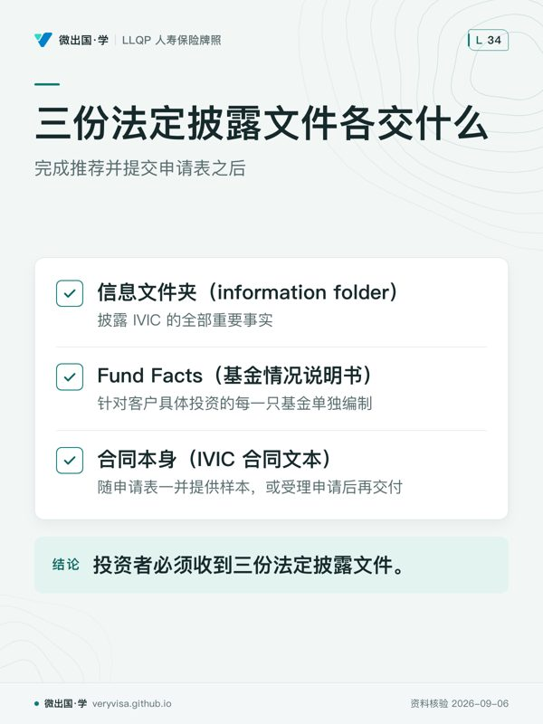

🃏 Flashcards · 3 闪卡 · 3 张 🖼 Slides · 2 幻灯 · 2 页 ✍️ Questions · 7 刷题 · 7 道
分离基金与年金 Segregated Funds & Annuities P1 必拿分 P1 Must score
ZH EN ZH + EN
先看这一章怎么考 First, how this chapter is tested
画像到产品的决策树匹配题：给出客户的目标、时间跨度、风险承受力与账户类型，考察能否在给付型年金（payout annuity）、个人分离基金（individual segregated fund）、积累型年金（accumulation annuity）与团体分离基金（group segregated fund）之间做出合规选择，核心测试产品结构特征与客户真实处境的匹配度。 Decision tree matching questions from profile to product: Given a client's objectives, time horizon, risk tolerance, and account type, scenarios test whether candidates can make compliant choices among payout annuities, individual segregated funds, accumulation annuities, and group segregated funds, focusing on matching product structural characteristics to the client's actual situation. 申请表角色与权限边界题：通过客户想把年轻配偶设为受保人、配偶 RRSP 出资方想指定受益人、或代理人替客户填表等场景，测试注册账户（registered account）与非注册账户（non-registered account）在合同持有人（contract owner）、受保人（annuitant）及受益人（beneficiary）上的法定限制。 Application form roles and authority boundary questions: Through scenarios where a client wants to name a younger spouse as the annuitant, a contributing spouse to a spousal RRSP wants to designate the beneficiary, or an agent completes the form on behalf of a client, scenarios test the statutory restrictions in registered accounts versus non-registered accounts regarding the contract owner, annuitant, and beneficiary. 特殊签署与代理权限题：设置客户年迈患病或不在国内、由持有财产授权书（Power of Attorney for property）的人代签申请表的场景，测试代签申请表例外与指定或变更受益人权限的严格区分，以及考试口径与 BC 现行法律的差异。 Special execution and representative authority questions: Scenarios involve an elderly, ill, or abroad client whose application form is signed by an attorney acting under a Power of Attorney (POA) for property, testing the strict distinction between the exception allowing signing the application and the authority to designate or change beneficiaries, as well as the difference between exam standard rules and current British Columbia statutory law. 最常丢分的陷阱（看到题干信号就警觉） Traps that cost the most marks (watch for the signal in the stem)
代填等于代决陷阱 Agent completion equated to agent decision trap 题干出现代理人帮客户填写分离基金申请表（application form）、客户未亲自提供某项信息或存在语言理解障碍仍继续推进签字。 The question stem features an agent completing a segregated fund application form for a client, where the client has not personally provided certain information or where language and comprehension barriers exist, yet the agent proceeds toward signature. 注册账户分离角色陷阱 Registered account role splitting trap 题干涉及注册账户（registered account）或配偶注册退休储蓄计划（spousal RRSP），且客户试图让持有人（owner）与受保人（annuitant）分离，或由出资方指定受益人。 The question stem involves a registered account or a spousal Registered Retirement Savings Plan (spousal RRSP), and the client attempts to separate the contract owner from the annuitant, or have the contributing spouse designate the beneficiary. 授权书越权变更受益人陷阱 Power of Attorney exceeding authority to alter beneficiaries trap 题干同时出现持有人因病、行为能力受限或不在国内由财产授权书（POA）持有人代签申请表，以及要求指定或修改受益人（beneficiary）。 The question stem simultaneously features an owner who is ill, incapacitated, or abroad having an application form signed by an attorney under a Power of Attorney (POA), alongside a request to designate or change the beneficiary. 本章考点页：导图、要点表、7 道带逐项解析的练习 →
上一章建立的投资者画像（investor profile）到这里要变成一个具体动作：把客户的目标、期限、风险画像与账户类型，翻译成"该推荐分离基金还是年金、哪一档担保、哪一类产品"，并且把这个判断过程写成一份客户签字、代理人存档的书面文件。这一章对应 CISRO 能力组件 c3「落实推荐」，占本模块 25% ——仅次于评估客户处境（35%）与分析产品（30%），是全模块第三大板块。读完这一章，你要能做三件事：用一张决策树把画像变成产品建议；分清分离基金申请表上"谁该提供什么信息"与"合同持有人有什么限制"；以及看懂 reason-why 信为什么不是客户服务的加分项，而是代理人执业责任的重要书面证据。
一、制度设计与底层逻辑：推荐是判断，不是销售动作 本节回答 This section answers 解释佣金禁扰判断、同类比同类规则与违规投诉的证据链条 Explain that commissions must not bias advice, the like-compared-to-like rule, and the evidentiary chain of non-compliance complaints 本章考题 1 Question 1
1. "推荐"这个动作，法律上到底在做什么
代理人面前从来不是"卖不卖"这道选择题，而是"在多个技术上都可行的方案里，选出最贴合这个客户处境的那一个，并且说得出为什么"。分离基金与共同基金、年金与直接持有股票组合，往往能满足同一个财务目标，但只有其中一种真正匹配这个客户的税务账户结构、流动性需求与风险承受力。制度设计把这道选择题的答案权交给代理人，同时也把责任压在代理人身上——这正是 CISRO 把"落实推荐"单独列为一个能力组件、而不是并入产品分析的原因：分析产品是知识，落实推荐是判断，两者考核的能力不同。
底层逻辑由此推出第一条纪律：一份推荐如果没有留下"为什么选这个方案"的记录，事后就没有任何证明力 。客户几年后若质疑"当初为什么没推荐更保守的产品"，代理人手上如果没有 reason-why 信，剩下的只有各执一词。这不是形式主义，是把一次专业判断变成一份日后可以被重新审视的证据。
2. 谁与谁在博弈：佣金结构与"同类比同类"的纪律
推荐这一步最容易出问题的地方是佣金与追踪费。考试口径在讲基金分析（fund analysis）时特别强调：代理人须持续跟进新基金信息，第三方信息须核实来源，佣金或追踪费不得影响推荐判断 ——这条纪律之所以被单独强调，是因为它是"适当性原则"在实务中最容易被违反的一环：产品佣金高不等于产品适合客户，把两者混为一谈是可能导致适当性失守的因素。
与之配套的是"同类比同类"（like compared to like）：比较不同分离基金的业绩、管理方式或费用时，必须选同一类型的基金做对比（例如股票型对股票型），如果确实需要跨类型比较，代理人有义务向客户说明理由。这条纪律的价值在于防止代理人用"这只基金过去一年收益更高"这种表面对比误导客户，而回避了两只基金风险等级完全不同这个事实。
3. 法律后果：推荐做错了，代理人赔的不是佣金
一旦推荐与客户真实处境明显脱节——比如把一位唯一储蓄全押在保守型 GIC 的退休老人配进用款日前尚未到保证日的股票型分离基金——后果链条是：客户投诉 → 保司/MGA 合规部门调查 reason-why 信是否充分 → 情节严重则进入 BC 省级监管机构（Insurance Council of BC / BCFSA）的纪律处分程序。这条链条能不能启动，第一手证据就是当初有没有做全 reason-why 信 ，这正是这一章占考纲 25% 的原因：它不是背景知识，是代理人执业风险管理的核心动作。
节末检索小测 · 先别往回翻，凭记忆作答 Quick recall check: answer from memory before scrolling back
An advisor is preparing a segregated fund recommendation for a conservative retiree. Two funds are available: an equity segregated fund that pays a higher trailer fee and had strong returns last year, and a conservative bond segregated fund with a lower fee. The advisor wants to show the retiree a comparison of the two funds' one-year returns without mentioning their asset classes. Which rule directly governs the advisor's conduct in this situation?
一名代理人正在为一位保守的退休人士准备分离基金推荐。现有两只基金可选：一只支付更高追踪费且去年收益强劲的股票型分离基金，以及一只费用较低的保守债券型分离基金。代理人想向退休人士展示这两只基金的一年期收益对比，而不提及它们的资产类别。哪项规则直接规范代理人在这种情况下的行为？
a The advisor may compare any two segregated funds purely by return as long as both are Individual Variable Insurance Contracts. ✗ 违反了同类比同类（"like" compared to "like"）原则。即使同属个人可变保险合同（IVIC），不同资产类别的基金风险等级完全不同，不能仅凭表面收益率直接对比而不说明跨类理由（产品名称与双口径混淆陷阱）。 Incorrect. Violates the 'like' compared to 'like' principle; even though both are Individual Variable Insurance Contracts (IVICs), funds in different asset classes possess completely different risk profiles and cannot be directly compared purely on superficial returns without explaining the rationale for cross-category comparison (product naming and dual-standard confusion trap).
b Commission or trailer fee differences must not influence the recommendation, and any cross-category comparison requires explaining the reason to the client. ✓ 符合适当性原则（suitability principle）与同类比同类（"like" compared to "like"）纪律：佣金或追踪费（trailer fee）不得影响推荐判断，且比较不同类型基金时必须向客户说明跨类型比较的理由。 Correct. Aligns with the suitability principle and the 'like' compared to 'like' discipline: differences in commission or trailer fees must never bias recommendation judgment, and any comparison of different fund categories requires explaining the rationale for the cross-category comparison to the client.
c The advisor only needs to obtain the client's verbal acknowledgement at the time of application to justify choosing the higher-commission equity fund. ✗ 口头认可不能替代书面推荐理由信（reason-why letter），更不能使违反适当性原则（suitability principle）的高佣金错配推荐变得合规（口头同意替代推荐理由信陷阱）。 Incorrect. Verbal acknowledgement cannot substitute for a written reason-why letter, nor can it make an unsuitable, higher-commission mismatch recommendation compliant (verbal assent substituting for reason-why letter trap).
d The advisor is only liable to return the commission if the client later complains to the insurer about an unsuitable recommendation. ✗ 推荐失当的法律后果绝非仅退还佣金；客户投诉会触发保司或总代理（MGA）合规调查，情节严重将进入省级监管机构（Insurance Council of BC / BCFSA）的纪律处分程序。 Incorrect. The legal consequences of an unsuitable recommendation are by no means limited to refunding commissions; a client complaint triggers compliance investigations by the insurer or MGA, and serious cases proceed to disciplinary hearings before provincial regulators such as the Insurance Council of BC or BCFSA.
看答案与每个选项的解析 Show the answer and why each option is right or wrong 答案 Answer ：b
二、2026 现行政策与数字：DSC 已走完新单禁令，TCR 把"保证成本"单独列出来 本节回答 This section answers 对比DSC新单禁令与TCR保证成本单列的考试口径和现行规则 Compare the exam standard and current rules regarding the ban on new DSC contracts and the separate disclosure of TCR guarantee costs 本章考题 2 Question 2
考场与现行对照表：从"销售费怎么收"到"年度对账单怎么写"，考试口径与现行各差一层
ℹ️
这份指引对保险公司本身"不具直接法律约束力"，但已被 BC 采纳成执业期望
2023-04-20 的联合公告原文明确写「the Insurance Guidance itself is not legally binding」——它是各省保险监管机构自行采纳的指引，不是一条全国统一立法。BC 的采纳动作已经发生 ：Insurance Council of BC 于 2025-12-10 发布通知，正式把 2025-11-19 发布的《分离基金整合指引》全文采纳为对 BC 持牌人的执业期望，即时生效。也就是说，"这只是指引，没有法律约束力"这句话本身没错，但对 BC 执业代理人而言，"没有法律约束力"与"不用照办"是两件事——监管机构已经把它写进了对持牌人的期望清单，纪律处分程序照样可以引用它。
节末检索小测 · 先别往回翻，凭记忆作答 Quick recall check: answer from memory before scrolling back
A licensee in British Columbia is reviewing how annual cost disclosures and sales charges for segregated fund contracts work under the 2026 rules compared to the 2022 exam. When the first new-format annual statements under Total Cost Reporting (TCR) are delivered to investors in early 2027 for the 2026 reporting year, how must the guarantee cost of an Individual Variable Insurance Contract (IVIC) be shown?
一名 BC 省持牌人正在梳理分离基金合同的年度费用披露与销售费在 2026 年现行规则下与 2022 年考试口径的差异。当总成本报告（TCR）下的首份新格式年度对账单于 2027 年初就 2026 报告年度交付给投资者时，个人可变保险合同（IVIC）的保证成本必须如何列示？
a It is omitted completely because annual statements only disclose the Management Expense Ratio (MER) as a percentage. ✗ 仅披露管理费比率（MER）与销售费是 2022 年考试口径的旧状态；2026-01-01 生效的总成本报告（Total Cost Reporting, TCR）新规已要求以加元披露合同层面的费用合计（产品名称与双口径混淆陷阱）。 Incorrect. Disclosing only the Management Expense Ratio (MER) and sales charges reflects the older 2022 exam standard; new Total Cost Reporting (TCR) rules effective January 1, 2026 require disclosing total contract-level fees in Canadian dollars (product naming and dual-standard confusion trap).
b It is always added twice, once inside the fund expenses total and once more as a separate guarantee cost line shown in dollars. ✗ 总成本报告（TCR）明确要求避免重复计算披露金额，只有当保证成本尚未计入其他费用时才单独列示，绝不能重复计入（产品名称与双口径混淆陷阱）。 Incorrect. Total Cost Reporting (TCR) explicitly mandates avoiding double-counting disclosed figures, requiring guarantee costs to be shown as a separate line only when not already included in other fees (product naming and dual-standard confusion trap).
c It appears as its own dollar total at contract level only if not already in other fees, so nothing is counted twice. ✓ 根据 2026-01-01 起生效的总成本报告（Total Cost Reporting, TCR）新规，保险公司须在年报中披露每只基金的费用率（%）、全部基金费用合计（$），并在保证成本尚未计入其他费用时单列保证成本合计（$）。考试口径仅要求披露管理费比率（MER）与销售费，本题针对 2026 现行 TCR 规则作答。 Correct. Under new Total Cost Reporting (TCR) rules effective January 1, 2026, insurers must disclose the fund expense ratio as a percentage for each fund, total fund expenses in Canadian dollars ($), and a separate dollar total for guarantee costs ($) if not already included in other fees. The exam standard only required disclosing MER and sales charges, whereas this question addresses current 2026 TCR rules.
d It is replaced by a unified deferred sales charge (DSC) clearance schedule set by the provincial Insurance Act. ✗ BC 自 2023-06-01 起禁止新单含递延销售费（DSC）的执法依据是《金融机构法》（Financial Institutions Act）s.244(2)(e)(ii) 而非《保险法》（Insurance Act），且旧合同按各自购买日及原表核实，没有统一清零年，更与保证成本披露无关（产品名称与双口径混淆陷阱）。 Incorrect. The statutory authority for BC's ban on new DSC contracts effective June 1, 2023 is Financial Institutions Act s.244(2)(e)(ii) rather than the Insurance Act, and existing contracts run according to purchase dates without any unified reset date, which is unrelated to guarantee cost disclosure (product naming and dual-standard confusion trap).
看答案与每个选项的解析 Show the answer and why each option is right or wrong 答案 Answer ：c
三、实务流程：从画像到申请表，六步走完一份合规的推荐 本节回答 This section answers 梳理决策树、申请表角色权限、三件套披露及推荐理由信五要素 Outline the decision tree, application form role permissions, three disclosure documents, and five elements of a reason-why letter 本章考题 3 Question 3
1. 推荐决策树：把画像的四个维度翻译成产品
图：推荐决策的四组输入——目标、时间跨度、风险画像与账户类型共同决定建议
上一章建立的投资者画像给出四组输入——目标（收入还是增值）、时间跨度、风险画像（承受能力与承受意愿共同约束，以较低风险水平为限）、资金所在的账户类型 ——这一步要把它们收敛成一个产品建议：
推荐可以是单一方案，也可以是"主推方案 + 备选方案"，或者并列多个方案供客户选择——考试口径没有规定必须只给一个选项，但无论哪种形式，公平对待客户原则（FTC）的七条要求全程适用：产品设计与销售以客户利益优先、宣传材料准确清晰、合同存续期内持续提供有助决策的信息、避免利益冲突、最小化不适当销售风险、确保建议相关、公平及时处理投诉。
2. 申请表：谁该提供什么，谁不能替代谁
分离基金申请表由投资者与代理人共同完成——投资者提供信息内容，代理人负责把信息记录到表格上 （电子或纸质形式均可）。这一句看似简单，却是这一章最容易被考出来的陷阱："代理人负责把信息填进表格"不等于"代理人可以自己决定填什么内容"——内容必须来自投资者本人，代理人不能代替客户做决定或编造信息。
✕
代签与指定受益人是两项权限
考试口径 AMF 9e 2022 提到 BC 例外，现行处理依授权书法。BC《Power of Attorney Act》s.20 对持续授权代理人作出限定：变更本人已有受益人指定须法院授权；更新、替换或转换类似文书时，可依条件沿用本人有能力时指定的同一受益人；另建文书时的新指定限本人遗产。代签申请表不等于可任意换受益人。
3. 披露文件三件套：信息文件夹、Fund Facts、合同本身，各自交付什么、什么时候交付
代理人完成推荐并提交申请表之后，投资者必须收到三份法定披露文件，各自的角色不同：
信息文件夹（information folder） ：由保险公司按所适用的合同产品或系列编制，用简明语言披露 IVIC 的全部重要事实（保证结构、费用计算方式、保险公司变更合同的权利等）。须确认文件覆盖客户实际合同与所选基金，不能拿同公司另一系列的信息册替代。Fund Facts（基金情况说明书） ：针对客户具体投资的每一只基金单独编制，数据截至上一年 12 月 31 日，格式在全行业统一，方便跨基金比较，用通俗语言写成。代理人必须与投资者一起过一遍所推荐基金的 Fund Facts，确认客户理解、并解答疑问。合同本身（IVIC 合同文本） ：可以随申请表一并提供样本，也可以在保险公司受理申请后再交付；考试口径以本人交付／挂号邮寄说明交付留痕；实务还须核合法电子交付及保险人同意机制，不能排除所有电子交付，若附有送达回执，须签字见证后寄回保险公司。合同生效日＝收到首期存款后的下一个估值日，且全部条件满足，交付样本合同本身不构成购买完成。
交付时限方面，撤回权（right of rescission）是信息折页写明的合同权利——它来自行业指引确立的标准做法，不是成文法上的法定权利，以手上那份信息折页的条款为准：投资者收到购买确认后2 个营业日 内可书面撤回，撤回后领回"已投入金额"与"撤回请求次一估值日的基金价值"两者中较低者，相关费用一并退回；而所引 iA／Manulife 条款的起点是实际收到确认与邮寄后第 5 个营业日两者中较早者——这两个时限一起决定了"客户到底还有多久可以反悔"这道计算题该怎么算。
4. Reason-why 信：为什么它"不是可选项"
考试口径原文明确写这封信"不是可选的"（not optional）——代理人在申请阶段就要准备好，与客户一起过一遍内容，双方各留一份存档。它必须做到五件事：
确认事实 ：写清楚代理人掌握的客户财务与需求事实；核实客户的指示 ：把客户口头确认过的决定落成书面记录；点出这份推荐满足了客户的哪些需求、又留下了哪些需求没有覆盖 ——不覆盖不等于失职，但必须写出来让客户知情；说明为什么这笔交易是适当的 ：把适当性判断的推理过程写下来，而不是只写结论；证明客户理解了自己在买什么 ：不是走过场签个字，而是有实质内容支撑"客户知情"这件事。
一份合格的 reason-why 信，本质上就是把这一章开头讲的"推荐是判断，不是销售动作"这句话落成一份可以被日后审视的书面证据。
节末检索小测 · 先别往回翻，凭记忆作答 Quick recall check: answer from memory before scrolling back
A client wants to save money conservatively with an insurance company, values the estate-planning advantages of an insurance contract such as bypassing probate, but explicitly states that she does not want to be locked into a 10-year maturity date or exposed to sales charges and annual Management Expense Ratio (MER) fluctuations. Based on the recommendation decision tree, which product best fits her profile?
一位客户希望在保险公司保守存钱，看重保险合同免遗嘱认证等遗产规划优势，但明确表示不想受 10 年到期日约束，也不想承受销售费和年度管理费比率（MER）波动。根据推荐决策树，哪款产品最契合她的画像？
a An accumulation annuity, which functions similarly to a GIC issued by an insurer while keeping insurance contract features. ✓ 根据推荐决策树，当客户目标是保守存钱、不想受 10 年到期日、销售费或年度管理费比率（MER）波动约束时，指向积累型年金（accumulation annuity），它在考试口径中定位接近保险公司发行的 GIC，同时保留免遗嘱认证等保险合同特性。 Correct. In the recommendation decision tree, when a client aims to save conservatively without being subject to a 10-year maturity date, sales charges, or annual MER fluctuations, the recommendation points to an accumulation annuity, which in the exam standard is positioned similarly to an insurer-issued GIC while retaining insurance contract features such as probate bypass.
b An individual segregated fund with a 100/100 maturity and death benefit guarantee and the highest available guarantee level. ✗ 个人分离基金（individual segregated fund）最短有 10 年到期日约束，且 100/100 担保档位伴随较高的年度管理费比率（MER），直接违背客户不想受 10 年到期日和 MER 波动约束的诉求（产品名称与双口径混淆陷阱）。 Incorrect. Individual segregated funds have a minimum 10-year maturity constraint, and a 100/100 guarantee tier carries higher annual Management Expense Ratios (MERs), directly conflicting with the client's desire to avoid a 10-year maturity and fee fluctuations (product naming and dual-standard confusion trap).
c A group segregated fund offered through an employer's retirement plan, which carries its own death benefit by default. ✗ 团体分离基金（group segregated fund）面向雇主团体退休计划成员，仍受分离基金的费率波动影响，且默认不提供身故保证（death benefit guarantee），不符合该客户的个人保守储蓄画像（产品名称与双口径混淆陷阱）。 Incorrect. Group segregated funds are designed for members of employer group retirement plans, remain subject to fee fluctuations, and carry no death benefit guarantee by default, failing to match this client's individual conservative savings profile (product naming and dual-standard confusion trap).
d A variable payout annuity that converts her savings immediately into market-linked retirement income. ✗ 给付型年金（payout annuity）适用于已退休或临近退休、追求稳定退休收入的客户，且变动收益年金仍承受市场波动，不适合目标是保守存钱积累的客户（产品名称与双口径混淆陷阱）。 Incorrect. Payout annuities are suited for clients who are retired or nearing retirement seeking steady income, and variable payout annuities remain exposed to market volatility, making them unsuitable for a client focused on conservative accumulation (product naming and dual-standard confusion trap).
看答案与每个选项的解析 Show the answer and why each option is right or wrong 答案 Answer ：a
四、2026 市场：一份 2025 年才发布的整合指引，把推荐与年报要求写进了同一份文件 本节回答 This section answers 说明2025整合指引在BC的采纳效力、三档担保与追偿式销售费 Explain the adoption status of the 2025 Consolidated Guidance in BC, three guarantee tiers, and advisor chargeback sales charges
2026 年的分离基金推荐环节，最值得知道的现行动态不是某个产品名字，而是一份监管文件：CCIR（加拿大保险监管者理事会）与 CISRO 于 2025-11-19 联合发布了《分离基金整合指引》 ，把此前分散在多份文件里的规则重新整理成一份，覆盖 IVIC 从设计、分销、发行、销售到售后服务的全生命周期。Insurance Council of BC 已于 2025-12-10 正式采纳这份指引，即时生效——它点名的覆盖主题里，"推荐、建议与披露"与"年度对账单（总成本报告）"是并列的两节，这印证了本章反复强调的逻辑：reason-why 信服务的适当性判断，与年度成本报告要向客户交代的费用透明度，是同一套监管期望下的两件事，不是互不相关的两条线。行业协会对这份指引的公开回应也证实：新规增加了针对代理人的需求评估与专业能力方面的市场行为要求，同时保留了"顾问追偿式销售费（advisor chargeback）"作为 DSC 全面禁售之后的一种非递延式佣金安排——这个名词考试口径完全没有出现过，是 2023 年 DSC 禁令之后市场演化出的新格式。
在产品层面，现行核实到的一手证据只有一条（其余保司具体产品线名称与担保梯度未逐一回源核实，标"待深研"，不编造）：Canada Life 现行分离基金合同提供 75/75、75/100、100/100 三档到期/身故担保组合 ，与考试口径"到期担保与身故担保各自可选 75%/100%"的结构完全对应——这说明考试口径讲的担保结构本身是长青的行业标准，2026 年真实产品只是把它做成了三档明确的套餐供客户选择，而不是让代理人临时拼装。
代理人执行推荐决策树与准备 reason-why 信时，行业普遍通过保司或 MGA 提供的合规平台/CRM 系统完成留痕（与上一章讲的风险问卷电子化是同一套基础设施），具体系统品牌与字段设计未逐一核实，标"待深研"。
节末检索小测 · 先别往回翻，凭记忆作答 Quick recall check: answer from memory before scrolling back
In December 2025, the Insurance Council of BC adopted the consolidated segregated fund guidance issued by CCIR and CISRO in November 2025. Following the prohibition of deferred sales charges (DSC) on new segregated fund contracts, which non-deferred commission arrangement has been retained in the market and recognized in industry responses to this guidance?
2025 年 12 月，BC 省保险理事会采纳了 CCIR 与 CISRO 于 2025 年 11 月发布的分离基金整合指引。在新分离基金合同全面禁售递延销售费（DSC）之后，市场保留并在行业对该指引的回应中确认了哪种非递延式佣金安排？
a A mandatory 90-year age cap commission schedule applied uniformly across all non-registered contracts. ✗ 非注册合同受保人可接受年龄按具体产品条款核实，并无所有产品统一的 90 岁门槛，更不是一种佣金安排（产品名称与双口径混淆陷阱）。 Incorrect. The maximum eligible age for an annuitant on a non-registered contract is verified under specific contract terms rather than a universal age-90 ceiling, and is not a commission structure (product naming and dual-standard confusion trap).
b A newly created deferred redemption fee payable by the investor under the provincial Insurance Act. ✗ 2023-06-01 起 BC 已依《金融机构法》（Financial Institutions Act）禁止新分离基金合同含递延销售费（DSC），并非新设由投资者承担的递延赎回费（产品名称与双口径混淆陷阱）。 Incorrect. BC prohibited deferred sales charges (DSC) on new segregated fund contracts under the Financial Institutions Act effective June 1, 2023, rather than establishing a new deferred redemption fee borne by investors (product naming and dual-standard confusion trap).
c An automatic exemption from preparing a reason-why letter whenever a client selects a 75/75 guarantee package. ✗ 无论客户选择 75/75、75/100 还是 100/100 担保套餐，推荐理由信（reason-why letter）都不是可选项，整合指引反而强化了需求评估与适当性披露要求（口头同意替代推荐理由信陷阱）。 Incorrect. Regardless of whether a client chooses a 75/75, 75/100, or 100/100 guarantee tier, a reason-why letter is never optional; the Consolidated Guidance reinforces needs assessments and suitability disclosure requirements (verbal assent substituting for reason-why letter trap).
d The advisor chargeback option, where the advisor repays part of the commission to the insurer if the client redeems early. ✓ 根据本章现行市场说明，2023 年递延销售费（DSC）新单禁令之后，市场保留了顾问追偿式销售费（advisor chargeback）这一非递延式佣金安排选项。注意该名词未出现在 2022 考试口径中，属于 2026 现行市场与监管整合动态。 Correct. Following the 2023 ban on new deferred sales charge (DSC) contracts, the market retained the advisor chargeback sales charge option as a non-deferred commission arrangement. Note that this term does not appear in the 2022 exam standard and reflects current 2026 market practice and regulatory developments.
看答案与每个选项的解析 Show the answer and why each option is right or wrong 答案 Answer ：d
五、历史变革：从"口头推荐"到"结构化文件+ 分省监管整合" 本节回答 This section answers 梳理从早期主观口头推荐到结构化三件套及分省监管整合的演进 Trace the industry evolution from early subjective verbal advice to structured three-document disclosure and provincial regulatory harmonization
分离基金推荐的合规化经历了两层演进。第一层是行业内部的：早年代理人对客户是否适合某只基金，很大程度依赖主观经验判断，缺乏强制性书面留痕，客户投诉时代理人难以举证。CLHIA 与保险公司逐步把"推荐"这个动作制度化为申请表、reason-why 信、Fund Facts 三件套的组合，把"代理人凭经验判断"升级为"代理人必须留下结构化文件证明判断过程"。
第二层是这一两年才完成的、考试口径完全没有赶上的监管整合：2022 年 CCIR/CISRO 就总成本报告向业界征求意见，2023-04-20 正式发布 IVIC 年度成本披露指引（把分离基金纳入 TCR）；2023-06-01 各省分别落地 DSC 新单禁令；到 2025-11-19，CCIR/CISRO 索性把这几年陆续出台的分离基金相关规则整合成一份文件 重新发布，2025-12-10 起在 BC 落地。这个"先分头立规、再整合成一份指引"的节奏，本身就是理解 2026 年现行监管环境的钥匙：考试口径写的是 2022 年之前的碎片状态，而现行规则已经被主动收拢成一套更完整的期望清单。
节末检索小测 · 先别往回翻，凭记忆作答 Quick recall check: answer from memory before scrolling back
Historically, segregated fund recommendations evolved through two distinct layers: first within the industry, and later through regulatory consolidation between 2022 and 2025. What was the primary shift achieved by the first layer of industry institutionalization led by industry associations and insurers?
从历史演进看，分离基金推荐的合规化经历了两层变革：第一层发生在行业内部，第二层则是 2022 年至 2025 年间的监管整合。由行业协会与保险公司推动的第一层行业制度化，实现的核心转变是什么？
a Turning subjective, experience-based verbal advice into structured records: the application form, the reason-why letter and Fund Facts. ✓ 第一层行业内部演进的核心，是把早年依赖代理人主观经验、缺乏书面留痕的口头推荐，制度化为申请表（application form）、推荐理由信（reason-why letter）与基金情况说明书（Fund Facts）三件套的结构化文件留痕。 Correct. The core of the internal industry evolution was institutionalizing recommendation practices—moving from early subjective, unrecorded verbal advice to structured documentation consisting of the application form, reason-why letter, and Fund Facts.
b Replacing provincial insurance regulators with a single federal statute that makes all guidance directly binding on insurers. ✗ 加拿大保险监管并未合并为单一联邦立法；CCIR/CISRO 指引本身不具直接法律约束力（not legally binding），而是由各省监管机构（如 Insurance Council of BC）自行采纳为对持牌人的执业期望（产品名称与双口径混淆陷阱）。 Incorrect. Canadian insurance regulation has not merged into a single federal statute; CCIR/CISRO guidelines are not directly legally binding on their own, but are adopted by provincial regulators (such as the Insurance Council of BC) as regulatory expectations for licensees (product naming and dual-standard confusion trap).
c Eliminating the need for suitability analysis whenever an investor signs a paper application form in person. ✗ 制度化演进恰恰是为了证明适当性判断过程，客户在申请表上签字绝不能免除适当性分析（suitability analysis）和推荐理由信留痕（口头同意替代推荐理由信陷阱）。 Incorrect. The institutional evolution was specifically designed to prove the suitability process; client signatures on application forms never waive the requirement for suitability analysis and reason-why letter documentation (verbal assent substituting for reason-why letter trap).
d Transferring the responsibility for providing personal financial facts on the application form from the investor to the advisor. ✗ 申请表的信息内容始终必须由投资者本人或获授权者提供，代理人只负责记录与解释，从未把提供事实的责任转移给代理人（代填等于代决陷阱）。 Incorrect. The factual content of the application form must always be provided by the investor or authorized representative, while the advisor is responsible only for recording and explaining; the duty to supply factual information is never transferred to the advisor (agent completion equated to agent decision trap).
看答案与每个选项的解析 Show the answer and why each option is right or wrong 答案 Answer ：a
六、案例（以下人物与数字均为示例，不对应真实客户） 本节回答 This section answers 通过三个典型案例剖析注册账户填错、POA越权与缺推荐理由信 Analyze three typical cases involving registered account errors, POA overreach, and missing reason-why letters
案例一：注册账户下受保人填错（列治文）
张先生持有一份 RRSP 账户资金，想把太太设为这份分离基金合同的 annuitant，自己继续做 owner，理由是"太太比我年轻，这样保证能维持更久"。代理人在核对申请表时发现这个安排不成立：RRSP 是 registered 合同，owner 必须与 annuitant 是同一人 ，张先生不能把太太单独设为 annuitant 而自己留任 owner。
代理人进一步了解发现，张先生真正想要的其实是"配偶 RRSP"（spousal RRSP）这种结构——但那需要太太本人作为 owner 兼 annuitant、张先生作为出资方，出资方在这个结构下没有任何所有权 ，也不能指定受益人。这与张先生"我出资、我控制"的预期完全相反。
常见错法 ：把"我想让配偶受益"直接等同于"把配偶设为 annuitant，我继续当 owner"——这个安排在 registered 合同下不成立；真正能实现"配偶受益"这个目标的路径，是配偶 RRSP（出资方放弃所有权）或者在非注册合同里把配偶设为受益人（owner 不变，但需另外理解受益人与 annuitant 是两个不同角色）。代理人的职责是在申请表提交前发现这类结构性错配，而不是让客户带着一个法律上不成立的安排走进签字环节。
案例二：POA 代签申请表与受益人变更（素里）
李太太 82 岁，因中风后语言与书写能力受限，儿子小李持有她的财产授权书（POA for property）。代理人为李太太重新推荐一份分离基金合同，需要小李代母亲签署申请表，同时李太太此前想变更受益人（把原受益人从已故的丈夫改为孙辈）。
代理人先核小李持有的持续授权书是否有效及授权范围，再核受益人操作。本例把已有指定从丈夫改为孙辈，须取得法院授权；若签发新文书，也不能以“本人曾想改”为由跳过 s.20 的限定。只能在满足条件后向保司递交，服务记录保留授权文件、法院命令与处理依据。
常见错法 ：只凭合同在 BC 就批准换人，或把法务复核视为法院授权。正确做法是分开代签权与受益人权限；本例改已有指定须先取得法院授权。
案例三：没有 reason-why 信的口头推荐（温哥华）
王先生在一次咖啡厅的非正式聊天中，被代理人推荐把一笔 $50,000 的非注册资金投入一只全球股票型分离基金，理由是"这只基金过去三年表现很好"。代理人当场没有准备 reason-why 信，也没有留存书面的需求分析记录，只是口头说明后请王先生在申请表上签字。
一年后市场回调，王先生的投资出现明显亏损，向保司投诉"代理人没有充分说明风险，也没有评估我的风险承受能力"。保司合规部门调查时，代理人手上没有 reason-why 信，也拿不出任何书面记录证明当初做过风险承受能力评估或产品比较——只剩下"我当时确实讲过"这句无法举证的口头陈述 。
常见错法 ：把"客户口头认可、签了字"当成推荐合规的全部证据。考试口径明确规定 reason-why 信不是可选项，必须在申请阶段准备并与客户一起过一遍内容，双方留档；"基金过去表现好"这个理由本身也犯了另一个错误——历史业绩只能回顾，不能预测，不能单独作为推荐依据，必须结合客户的风险画像与投资目标一起判断。
节末检索小测 · 先别往回翻，凭记忆作答 Quick recall check: answer from memory before scrolling back
During an informal meeting at a café, an advisor recommends that a client invest $50,000 of non-registered savings into a global equity segregated fund solely because the fund performed well over the past three years. The client verbally agrees and signs the application form, and the advisor prepares no written suitability notes or reason-why letter. One year later, the market drops and the client complains. What is the advisor's position during the compliance investigation?
在一次咖啡厅的非正式会面中，代理人仅凭某只全球股票型分离基金过去三年表现良好，就推荐客户将 $50,000 非注册储蓄投入该基金。客户口头同意并在申请表上签字，代理人未准备任何书面适当性记录或推荐理由信。一年后市场下跌，客户投诉。在合规调查中，代理人处于什么境地？
a The advisor is fully protected because the client signed the application form and the fund was held in a non-registered account. ✗ 把客户口头认可并签字当成全部合规证据是典型错误；没有推荐理由信（reason-why letter），单凭申请表签名无法证明推荐过程的适当性（口头同意替代推荐理由信陷阱）。 Incorrect. Treating client verbal assent and signature as complete compliance proof is a classic mistake; without a reason-why letter, an application form signature alone cannot substantiate the suitability of the recommendation (verbal assent substituting for reason-why letter trap).
b The advisor lacks documentary proof of suitability because a reason-why letter is mandatory, and past performance alone cannot justify a recommendation. ✓ 考试口径明确规定推荐理由信（reason-why letter）不是可选项（not optional），且历史业绩只能回顾不能预测、不能单独作为推荐依据；缺少书面记录会使代理人在合规调查中陷入无法举证的境地。 Correct. The exam standard explicitly establishes that a reason-why letter is not optional, and past performance looks only backward without guaranteeing future returns and cannot justify a recommendation alone; lacking written records leaves the advisor unable to substantiate suitability during a compliance investigation.
c The advisor's recommendation is valid as long as the global equity fund's three-year return was calculated net of the Management Expense Ratio (MER). ✗ 虽然业绩数字扣除管理费比率（MER）才是真实收益，但历史业绩本身只能回顾不能预测，绝不能脱离客户的风险画像与投资目标单独作为推荐依据（口头同意替代推荐理由信陷阱）。 Incorrect. Although returns must be calculated net of the Management Expense Ratio (MER), past performance only looks backward and cannot serve as the sole justification for a recommendation detached from the client's risk profile and investment goals (verbal assent substituting for reason-why letter trap).
d The complaint will be dismissed automatically because the two-business-day right of rescission expired one year ago. ✗ 2 个营业日的撤回权（right of rescission）是购买确认后的合同反悔期，它的届满绝不免除代理人因未做风险评估、未留存推荐理由信（reason-why letter）而承担的适当性违规责任（产品名称与双口径混淆陷阱）。 Incorrect. The two-business-day right of rescission is a cooling-off period following trade confirmation; its expiration does not shield the advisor from liability for suitability violations resulting from failing to assess risk and retain a reason-why letter (product naming and dual-standard confusion trap).
看答案与每个选项的解析 Show the answer and why each option is right or wrong 答案 Answer ：b
七、考试陷阱与考场与现行对照清单 本节回答 This section answers 汇总八大高频考场陷阱与考试口径对2026现行规则的答题边界 Summarize eight high-frequency exam traps and the answering boundaries between exam standard rules and 2026 current standards 本章考题 4 Question 4
"代理人填表" ≠ "代理人决定填什么" ——题目常设置代理人代为操作申请表的场景，诱导误判为"代理人可以自行提供信息"，正确理解是内容必须来自投资者本人，代理人只负责记录与解释。Registered 合同 owner 必须等于 annuitant，non-registered 合同才允许两者不同 ——题目常给出客户想把配偶或子女设为 annuitant 而自己留任 owner 的场景，先看资金所在账户是否为 registered 账户，是则该安排不成立（案例一）。配偶 RRSP 下，出资方没有任何所有权，也不能指定受益人 ——题目常暗示"谁出钱谁该有控制权"，正确答案永远是"owner 兼 annuitant 是接受存款的一方，出资方无所有权"。POA 代签权与受益人权限分别核。BC 持续授权代理人改既有指定须法院授权，续换类似文书与新文书依 s.20 的不同限制办理；不能只凭“BC 例外”批准换人。
Reason-why 信不是"客户已经口头同意"的替代品，也不是可选项 ——题目常给出"客户当场签字认可"的场景诱导默认合规已完成，正确答案是必须另有书面的 reason-why 信留档，缺了这份文件，口头认可在事后调查中没有证明力（案例三）。团体分离基金默认不提供身故保证 ——名字里有"分离基金"三个字，不代表自动具备个人分离基金的全部保证结构；客户若首要诉求是身故本金保障，团体分离基金本身不满足，需在推荐决策树里单独判断。历史业绩只能回顾，不能作为推荐的单独依据 ——"这只基金过去表现好"不构成一个完整的推荐理由，必须与客户的风险画像、时间跨度、账户类型一起判断，且业绩数字本身已经扣除 MER 才是真实收益。TCR 自 2026 年度开始计算，首份新报告于 2027 年收到；只有保证成本尚未计入其他费用时才单列，不能重复收费或重复计算披露金额。
节末检索小测 · 先别往回翻，凭记忆作答 Quick recall check: answer from memory before scrolling back
An advisor is assisting an investor who has a language barrier in completing a segregated fund application form for a non-registered contract that will generate reportable investment income. Which procedure must the advisor follow to avoid a compliance trap?
一名代理人正在协助一位存在语言障碍的投资者填写一份将产生须申报投资收入的非注册分离基金合同申请表。为避免落入合规陷阱，代理人必须遵循哪项程序？
a Fill in the investor's answers based on the advisor's own best judgment so the application is not delayed, and skip the Social Insurance Number (SIN). ✗ 代理人负责记录表格不等于可以代替客户决定填什么内容，且非注册合同产生须申报的投资收入时同样必须提供社会保险号（SIN）（代填等于代决陷阱）。 Incorrect. The duty to record information onto the form does not entitle the advisor to decide form contents on the client's behalf, and non-registered contracts generating reportable investment income also mandate providing a Social Insurance Number (SIN) (agent completion equated to agent decision trap).
b Have the investor's adult child sign the application and designate a new beneficiary without checking any Power of Attorney (POA) document. ✗ 未经有效财产授权书（POA for property）核实不能代签申请表，且代签例外本身也不包含指定或变更受益人（beneficiary）的权限（授权书越权变更受益人陷阱）。 Incorrect. An application form cannot be signed on behalf of an investor without verifying a valid Power of Attorney (POA) for property, and the signing exception does not include authority to designate or alter beneficiaries (Power of Attorney exceeding authority to alter beneficiaries trap).
c Wait until the language or comprehension barrier is resolved with translation assistance, record the investor's own information, and collect the SIN for tax reporting. ✓ 当客户存在语言或理解障碍时，必须提供必要翻译协助并等障碍消除后才能继续；表格内容必须来自投资者本人，且产生须申报投资收入的非注册合同须提供社会保险号（SIN）用于税务报告。 Correct. When an investor faces a language or comprehension barrier, the advisor must provide translation assistance and wait until the barrier is resolved before proceeding; form contents must come directly from the investor, and non-registered contracts generating reportable investment income require a Social Insurance Number (SIN) for tax reporting.
d Recommend a group segregated fund instead, because group contracts automatically include a death benefit guarantee and require no investor information. ✗ 团体分离基金（group segregated fund）默认不提供身故保证（death benefit guarantee），且任何合规推荐都不能跳过投资者本人提供真实信息的要求（产品名称与双口径混淆陷阱）。 Incorrect. Group segregated funds provide no death benefit guarantee by default, and compliant recommendations cannot bypass the fundamental requirement that the investor personally provide accurate factual information (product naming and dual-standard confusion trap).
看答案与每个选项的解析 Show the answer and why each option is right or wrong 答案 Answer ：c
术语双语表
这一章与上一章合起来讲完了投资者画像到推荐落地的完整链路 ：画像决定了推荐决策树的四个输入，推荐决策树决定了产品与担保等级，申请表把决策落成法律文件，reason-why 信把判断过程留痕，披露文件三件套确保客户知情。分离基金合同签订后的售后服务、switch/reset、理赔与终止，是下一章要讲的内容，那一章会再次用到本章的 POA 代签例外与 BC 受益人变更规则——这两项权限须连同法院授权及合同条件一起判断。
本页知识卡 不看正文也能拿到这一节的核心内容：先看导读，再看图。点图放大，左右翻页。
放大 ⤢ 年度费用披露已从 MER／销售费走到 TCR 新规。 先看 先看两行的左右落差：一行看收费，一行看年报。易漏 保证成本只有尚未计入其他费用时才单列，避免重复计算。下一步 去讲解，带着「旧合同怎么核赎回排期」找持牌专业人士。详情与分享 → 
放大 ⤢ 三份文件各有角色，合同文本另有交付路径。 先看 先分清三份文件各自负责哪一层信息，再看合同的特殊交付方式。易漏 样本合同可以先给，也可以受理申请后再交；样本本身不等于购买完成。下一步 去练习，检查内容与交付时点能否一一配对。详情与分享 → 本站依据官方原文自撰